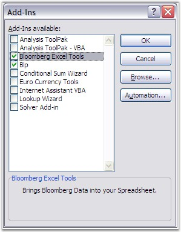

An Excel Add-In is a file (usually with a .xla or .xll extension) that Excel loads when it starts up. The file contains code (VBA in the case of a .xla Add-In) that adds additional functionality to Excel, usually in the form of new functions.
Add-Ins provide an excellent way of increasing the power of Excel, and they are the ideal vehicle for distributing your custom functions. Excel is shipped with a variety of Add-Ins ready for you to load and start using, and many third-party Add-Ins are also available. You can select these functions through the Add-Ins dialog box.

Figure 161: Add-Ins
Figure 162: Add-Ins in Excel
XlsIO provides support for Excel and custom Add-Ins. They can be accessed by first registering, and then using the Add-In's custom functions through XlsIO formulas.
Following code example illustrates how to register and use Add-Ins.
|
[C#]
IAddInFunctions unknownFunctions = workbook.AddInFunctions; unknownFunctions.Add("c:\blp\api\dde\blp.xla", "blp");
// Use the Function. sheet.Range[ "A3" ].Formula = "blp(A1+\" CORP\",\"PX_LAST\")"; |
|
[VB.NET]
Dim unknownFunctions As IAddInFunctions = workbook.AddInFunctions unknownFunctions.Add("c:\blp\api\dde\blp.xla", "blp")
' Use the Function. sheet.Range("A3").Formula = "blp(A1+"" CORP"",""PX_LAST"")" |
 Note: If you move the file to another computer, or
distribute it, the workbook will expect to find the same Add-In, in the same
place, on their computers. But, if the Add-In is moved or deleted from the
computer, the workbook won't be able to find it, and your code won't work. Make
sure that the Add-In is accessed by locating the .xla file through the Tools
menu (Tools -> Addins -> Browse).
Note: If you move the file to another computer, or
distribute it, the workbook will expect to find the same Add-In, in the same
place, on their computers. But, if the Add-In is moved or deleted from the
computer, the workbook won't be able to find it, and your code won't work. Make
sure that the Add-In is accessed by locating the .xla file through the Tools
menu (Tools -> Addins -> Browse).